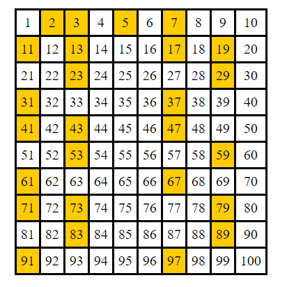

Azokat a természetes számokat, amelyeknek pontosan két osztójuk van, prímszámoknak (vagy másképp törzsszámoknak) nevezzük. Az 1 és a 0 nem prímszámok, mert az 1-nek egy darab, a 0-nak pedig végtelen sok osztója van. A 2 a legkisebb prímszám, egyben ő az egyetlen páros prímszám. Az első néhány prímszám: 2, 3, 5, 7, 11, 13, 17, 19, 23, 31, 37,…..
Már Eukleidész bebizonyította, hogy a prímszámok száma végtelen. A törzsszám elnevezés arra utal, hogy a prímszámok a természetes számok “atomjai”, hiszen minden természetes vagy prímszám, vagy felbontható prímszámok szorzatára. (Számelmélet alaptétele.) Prímszámok fő tulajdonsága, hogy ha egy prímszám osztója egy szorzatnak, akkor osztója a szorzat valamelyik tényezőjének.
